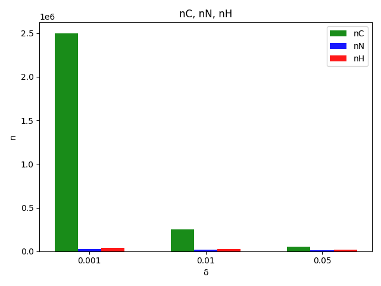

Para la parte 1 del ejercicio se siguió el siguiente procedimiento:
Las ecuaciones que se utilizaron para la parte 1 del ejercicio son las siguientes:
Encontradas en las páginas 13, 15 y 18 del material de la unidad 2 sesión 4
La teoría que se utilizó para la parte 1 del ejercicio es la siguiente:
Los resultados de los experimentos se muestran en la siguiente tabla:
| δ=0.5 | δ=0.05 | δ=0.005 | |
| ϵ=0.05 | 200 | 2,000 | 20,000 |
| ϵ=0.01 | 5,000 | 50,000 | 500,000 |
| ϵ=0.001 | 500,000 | 5,000,000 | 50,000,000 |
| δ=0.5 | δ=0.05 | δ=0.005 | |
| ϵ=0.05 | 46 | 385 | 788 |
| ϵ=0.01 | 1,138 | 9,604 | 19,699 |
| ϵ=0.001 | 113,735 | 960,365 | 1,969,860 |
| δ=0.5 | δ=0.05 | δ=0.005 | |
| ϵ=0.05 | 278 | 738 | 1,199 |
| ϵ=0.01 | 6,932 | 18,445 | 29,958 |
| ϵ =0.001 | 693,148 | 1,844,440 | 2,995,733 |
Se puede ver experimentalmente que nC > nH > nN
en cuanto a la dependencia de nC, nN y nH con respecto a ϵ y δ, se puede ver que:
Para la parte 2 se tomó lo implementado en la parte y se le pasaron los valores solicitados para ϵ y δ.
Los resultados de los experimentos se muestran en la siguiente tabla:
| nC | nN | nH | |
|---|---|---|---|
| ϵ = 0.01, δ = 0.001 | 2,500,000 | 27,069 | 38,005 |
| ϵ = 0.01, δ = 0.01 | 250,000 | 16,588 | 26,492 |
| ϵ = 0.01, δ = 0.05 | 50,000 | 9,604 | 18,445 |
Los resultados de los experimentos se muestran en la siguiente gráfica:
